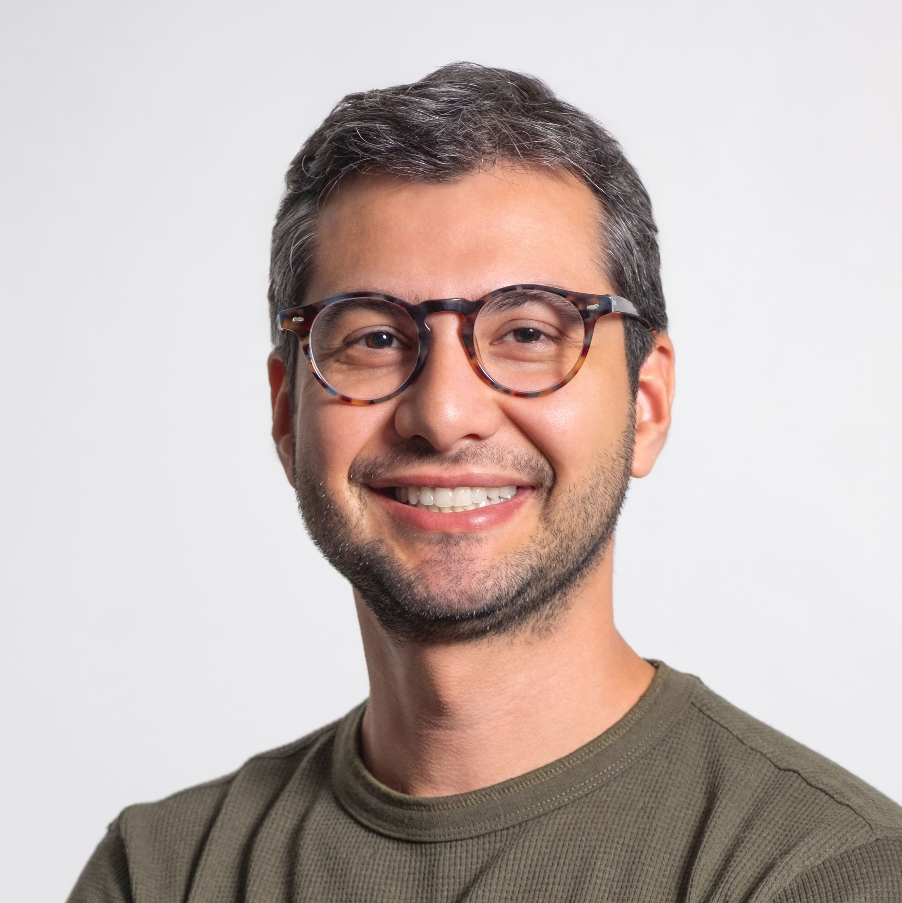

<!doctype html>
<html lang="en">
<head>
<meta charset="utf-8">
<meta name="viewport" content="width=device-width, initial-scale=1">
<title>C · Wheel — Wagner Rosa (prototype)</title>
<link rel="stylesheet" href="../shared/base.css">
<style>
  .shell { --side: minmax(400px, min(34vw, 540px)); }
  .side { padding: 0; overflow: hidden; border-right: 0; }

  .wheel { position: absolute; inset: 0; cursor: grab; touch-action: none; outline: none; }
  .wheel:active { cursor: grabbing; }
  /* fade the rows out before they reach the footer text */
  .wheel ul { -webkit-mask-image: linear-gradient(to bottom, transparent 0, #000 10%, #000 82%, transparent 96%); mask-image: linear-gradient(to bottom, transparent 0, #000 10%, #000 82%, transparent 96%); }
  .wheel ul { position: absolute; inset: 0; }
  .wheel li { position: absolute; left: 0; top: 0; will-change: transform, opacity; white-space: nowrap; }
  .wheel a {
    display: flex; align-items: baseline; gap: 10px; text-decoration: none;
    font-size: clamp(26px, 2.6vw, 38px); font-weight: 700; letter-spacing: -.04em; line-height: 1;
    transition: color .25s;
  }
  .wheel a .n { display: none; }
  .wheel a { font-weight: 600; }
  .wheel a.on { color: var(--accent); font-weight: 700; }
  .wheel a sup { align-self: flex-start; font-size: .36em; font-weight: 500; letter-spacing: .04em; color: var(--mute); margin-left: -2px; transform: translateY(.6em); }
  .wheel a.on sup { color: var(--accent); }
  /* children: a step smaller, lighter, indented under their section */
  .wheel li.child a { font-size: clamp(16px, 1.5vw, 21px); font-weight: 500; letter-spacing: -.02em; padding-left: 32px; color: #3a3a3a; }
  .wheel li.child a.on { color: var(--accent); font-weight: 700; }

  /* the rim: only half of a big circle shows; photo + name sit inside the visible half */
  .rim { position: absolute; inset: 0; pointer-events: none; width: 100%; height: 100%; }
  .rim circle { fill: none; stroke: var(--line); stroke-width: 1; }
  .rim line { stroke: var(--line); stroke-width: 1; }
  .rim line.major { stroke: rgb(0 0 0 / .26); }
  .pointer { position: absolute; width: 7px; height: 7px; border-radius: 50%; background: var(--accent); transform: translate(-50%, -50%); z-index: 2; pointer-events: none; }
  .hub {
    position: absolute; z-index: 3; left: 28px; display: flex; flex-direction: column; align-items: flex-start; gap: 0;
    text-align: left; text-decoration: none; transform: translateY(-50%);
  }
  .hub > span { display: flex; flex-direction: column; align-items: flex-start; gap: 3px; }
  .hub img { width: clamp(56px, 5vw, 72px); height: clamp(56px, 5vw, 72px); border-radius: 50%; object-fit: cover; margin-bottom: 12px; }
  .hub b { font-size: 15px; font-weight: 700; letter-spacing: -.03em; line-height: 1.1; white-space: nowrap; }
  .hub .mono { color: var(--mute); font-size: 9px; line-height: 1.35; white-space: nowrap; }
  .hub .status { margin-top: 8px; font-size: 9px; white-space: nowrap; }
  /* right pane: a vertical stack of panels driven by the same wheel (the bigger gear) */
  :root { --arc: 56px; }
  .stage { overflow: hidden; }
  .layer { position: absolute; inset: 0; overflow-x: hidden; overflow-y: auto; background: var(--paper); will-change: transform; }
  .panel .in { padding-right: calc(clamp(20px, 5cqi, 64px) + var(--arc)); }   /* room for the arc */
  [data-arc] { will-change: transform; }

  @media (max-width: 820px) {
    :root { --arc: 14px; }
    .shell { grid-template-rows: 44dvh 1fr; }
    .side { border-bottom: 0; padding: 0; }
    .wheel { top: 58px; }
    .wheel ul { -webkit-mask-image: linear-gradient(to bottom, transparent 0, #000 12%, #000 88%, transparent 100%); mask-image: linear-gradient(to bottom, transparent 0, #000 12%, #000 88%, transparent 100%); }
    .wheel a { font-size: 26px; }
    .wheel li.child a { font-size: 17px; padding-left: 24px; }
    .hub { top: 12px !important; left: 16px !important; transform: none; flex-direction: row; gap: 10px; text-align: left; }
    .hub img { width: 36px; height: 36px; margin: 0; }
    .hub b { font-size: 15px; }
    .hub .mono { max-width: none; }
    .hub > span { align-items: flex-start; gap: 1px; }
  }
</style>
</head>
<body>
<div class="shell">
  <aside class="side">
    <div class="wheel" id="wheel" tabindex="0" role="listbox" aria-label="Sections">
      <svg class="rim" id="rim" aria-hidden="true"></svg>
      <div class="pointer" id="pointer" aria-hidden="true"></div>
      <ul id="list"></ul>
    </div>
    <a class="hub" id="hub" href="#index" aria-label="Wagner Rosa, home">
      
      <span><b>Wagner Rosa</b><span class="mono">UX Lead &amp; Product Designer</span><span class="status mono"><i></i>Open to remote · GMT-3</span></span>
    </a>
  </aside>
  <main class="stage" id="stage"></main>
</div>
<script src="../shared/site.js"></script>
<script>
(function () {
  const $ = id => document.getElementById(id);

  const items = SITE.items, N = items.length;
  const list = $('list'), wheel = $('wheel'), stage = $('stage'), rim = $('rim'), hub = $('hub'), pointer = $('pointer');
  list.innerHTML = items.map(i =>
    `<li class="${i.level ? 'child' : ''}"><a href="#${i.id}" data-id="${i.id}" tabindex="-1"><span class="mono n">${i.n}</span><span>${i.label}</span>${i.id === 'cases' ? `<sup>${i.tag}</sup>` : ''}</a></li>`).join('');
  const els = [...list.children];

  /* slot space (small gear): one slot per item, a new section gets a little extra air */
  const slots = [];
  items.forEach((it, k) => { slots[k] = k === 0 ? 0 : slots[k - 1] + (it.level === 0 ? 1.6 : 1); });
  const maxSlot = slots[N - 1];
  const nearest = v => { let b = 0; slots.forEach((s, k) => { if (Math.abs(s - v) < Math.abs(slots[b] - v)) b = k; }); return b; };
  const clamp = v => Math.min(Math.max(v, 0), maxSlot);
  /* slot -> fractional item index (big gear: one full panel per item) */
  const slotToIdx = v => {
    let k = 0; while (k < N - 2 && v > slots[k + 1]) k++;
    return k + Math.min(Math.max((v - slots[k]) / (slots[k + 1] - slots[k]), 0), 1);
  };

  const reduce = matchMedia('(prefers-reduced-motion: reduce)').matches;
  const start = Math.max(0, items.findIndex(i => i.id === SITE.currentId()));
  let pos = slots[start];      // animated slot position
  let target = pos;            // where we are heading
  let shown = null, W = 0, H = 0, R = 0, step = 0, gap = 0, cx = 0, cy = 0, baseX = 0, stageH = 0;
  let lastPos = null, ticksG = null;
  let sc = null;               // smooth in-page scroll: { el, t }

  /* ---------- right pane ---------- */
  const ARC_SEL = '.eyebrow, .title, .lede, .facts > div, .bullets li, .sub, .rows li, .timeline li, .links, .prose > *';
  const layers = new Map();          // item index -> { el, arcEls }
  let arcDirty = true, arcMax = 56;

  function makeLayer(k) {
    const el = document.createElement('div');
    el.className = 'layer';
    el.innerHTML = SITE.panel(items[k].id);
    stage.appendChild(el);
    const arcEls = [...el.querySelectorAll(ARC_SEL)];
    arcEls.forEach(a => a.setAttribute('data-arc', ''));
    el.addEventListener('scroll', () => { arcDirty = true; }, { passive: true });
    const L = { el, arcEls };
    layers.set(k, L);
    return L;
  }

  /* panel k sits (k - ip) stage-heights from the centre: the next one rises from below */
  function syncLayers(ip) {
    const lo = Math.max(0, Math.floor(ip)), hi = Math.min(N - 1, Math.ceil(ip));
    for (const [k, L] of layers) if (k < lo || k > hi) { L.el.remove(); layers.delete(k); }
    for (let k = lo; k <= hi; k++) {
      const L = layers.get(k) || makeLayer(k);
      const off = (k - ip) * stageH;
      L.el.style.transform = off === 0 ? '' : `translateY(${off.toFixed(1)}px)`;
      L.el.style.pointerEvents = Math.abs(k - ip) < 0.5 ? '' : 'none';
      L.el.setAttribute('aria-hidden', Math.abs(k - ip) < 0.5 ? 'false' : 'true');
    }
  }

  /* lines drift: centre of the stage sits furthest right (same ")" as the wheel), top/bottom pull left */
  function arcUpdate() {
    if (reduce) return;
    const sr = stage.getBoundingClientRect(), mid = sr.top + sr.height / 2, half = sr.height / 2;
    layers.forEach(L => {
      const ts = L.arcEls.map(el => { const r = el.getBoundingClientRect(); return (r.top + r.height / 2 - mid) / half; });
      L.arcEls.forEach((el, i) => {
        const t = Math.min(1, Math.abs(ts[i]));
        el.style.transform = `translateX(${(arcMax * (1 - t * t)).toFixed(1)}px)`;
      });
    });
  }

  /* ---------- wheel (left) ---------- */
  function layout() {
    const r = wheel.getBoundingClientRect();
    W = r.width; H = r.height;
    stageH = stage.clientHeight;
    const stacked = innerWidth <= 820;
    cy = H / 2;
    R = Math.min(H * 0.62, 420);                       // big circle, centre off-screen: only half the arc shows
    if (!stacked) {
      baseX = Math.min(W * 0.55, 232);                // x of the active row
      gap = Math.min(66, Math.max(46, H * 0.07));
      hub.style.top = cy + 'px';
    } else {
      baseX = W * 0.3;
      gap = Math.min(46, Math.max(34, H * 0.1));
      hub.style.top = '';
    }
    cx = baseX - R - 18;
    step = gap / R;
    rim.setAttribute('viewBox', `0 0 ${W} ${H}`);
    let ticks = '';
    const dt2 = step / 2;                                  // graduation like a dial: two ticks per row, every 4th a bit longer
    for (let j = Math.ceil(-1.6 / dt2); j <= Math.floor((1.6 + maxSlot * step) / dt2); j++) {   // enough ticks to cover the whole turn of the wheel
      const a = j * dt2, c = Math.cos(a), sn = Math.sin(a), len = j % 4 === 0 ? 11 : 5;
      ticks += `<line class="${j % 4 === 0 ? 'major' : ''}" x1="${(cx + (R - 4) * c).toFixed(1)}" y1="${(cy + (R - 4) * sn).toFixed(1)}" x2="${(cx + (R - 4 - len) * c).toFixed(1)}" y2="${(cy + (R - 4 - len) * sn).toFixed(1)}"/>`;
    }
    rim.innerHTML = `<circle cx="${cx}" cy="${cy}" r="${R}"/><g id="ticks">${ticks}</g>`;
    ticksG = rim.querySelector('#ticks');
    pointer.style.left = (cx + R) + 'px'; pointer.style.top = cy + 'px';
    arcMax = parseFloat(getComputedStyle(document.documentElement).getPropertyValue('--arc')) || 56;
    lastPos = null;
  }

  /* two cascaded exponential smoothers = ease-in and ease-out, independent of the frame rate */
  let soft = pos, lastT = 0;
  function frame(now) {
    const dt = Math.min(0.05, (now - (lastT || now)) / 1000); lastT = now;
    if (reduce) { soft = pos = target; }
    else {
      soft += (target - soft) * (1 - Math.exp(-dt * 14));
      pos += (soft - pos) * (1 - Math.exp(-dt * 7));
      if (Math.abs(target - pos) < 0.0005 && Math.abs(target - soft) < 0.0005) pos = soft = target;
    }
    if (sc) {                                           // smooth scroll inside the current page
      const d = sc.t - sc.el.scrollTop;
      if (Math.abs(d) < 0.5) { sc.el.scrollTop = sc.t; sc = null; }
      else { sc.el.scrollTop += d * (1 - Math.exp(-dt * 11)); }
      arcDirty = true;
    }

    els.forEach((el, k) => {
      const th = (slots[k] - pos) * step;
      const x = cx + R * Math.cos(th) + 18;
      if (Math.abs(th) > 1.15 || x < 4) { el.style.opacity = 0; el.style.pointerEvents = 'none'; return; }
      const y = cy + R * Math.sin(th);
      const s = 1 - Math.abs(th) * 0.16;
      el.style.opacity = (Math.max(0, 1 - Math.abs(th) * 0.8) * Math.min(1, Math.max(0, (x - 24) / 70))).toFixed(3);   // also fade as a row nears the left edge, so nothing is cut mid-word
      el.style.pointerEvents = '';
      const bl = Math.max(0, Math.abs(th) - 0.3) * 2.6;   // depth: rows leaving the centre soften
      el.style.filter = bl > 0.05 ? `blur(${bl.toFixed(2)}px)` : '';
      el.style.transform = `translate(${x.toFixed(1)}px, ${y.toFixed(1)}px) translateY(-50%) scale(${s.toFixed(3)})`;
      el.style.transformOrigin = '0 50%';
    });

    if (pos !== lastPos) {
      lastPos = pos;
      if (ticksG) ticksG.setAttribute('transform', `rotate(${(-pos * step * 180 / Math.PI).toFixed(3)} ${cx} ${cy})`);
      syncLayers(slotToIdx(clamp(pos)));
      arcDirty = true;
      const idx = nearest(clamp(pos));
      if (idx !== shown) {
        shown = idx;
        SITE.setActive(list, items[idx].id);
        history.replaceState(null, '', '#' + items[idx].id);
      }
    }
    if (arcDirty) { arcDirty = false; arcUpdate(); }

    requestAnimationFrame(frame);
  }

  const go = k => { target = slots[Math.min(Math.max(k, 0), N - 1)]; };

  /* wheel / trackpad: accumulate, snap when input goes quiet */
  let snapT;
  wheel.addEventListener('wheel', e => {
    e.preventDefault();
    target = clamp(target + e.deltaY / 220);
    clearTimeout(snapT); snapT = setTimeout(() => go(nearest(target)), 110);
  }, { passive: false });

  /* right pane: scroll the page; once it hits the top/bottom, keep going and the wheel turns to the next/previous page */
  let edgeAcc = 0, edgeT;
  stage.addEventListener('wheel', e => {
    const idx = nearest(clamp(pos)), L = layers.get(idx);
    const moving = Math.abs(target - slots[idx]) > 0.04 || Math.abs(pos - slots[idx]) > 0.04;
    if (!moving && L) {
      const el = L.el, dy = e.deltaY, maxS = el.scrollHeight - el.clientHeight;
      const cur = sc && sc.el === el ? sc.t : el.scrollTop;
      const atBottom = cur >= maxS - 1, atTop = cur <= 0;
      if ((dy > 0 && !atBottom) || (dy < 0 && !atTop)) {   // scroll inside the page, eased
        e.preventDefault(); edgeAcc = 0;
        sc = { el, t: Math.min(Math.max(cur + dy, 0), maxS) };
        return;
      }
    }
    e.preventDefault();
    if (Math.sign(edgeAcc) !== Math.sign(e.deltaY)) edgeAcc = 0;
    edgeAcc += e.deltaY;
    clearTimeout(edgeT); edgeT = setTimeout(() => { edgeAcc = 0; }, 220);
    if (!moving && Math.abs(edgeAcc) < 60) return;          // small resistance at the edge, so momentum does not flip pages by accident
    target = clamp(target + e.deltaY / 260);
    clearTimeout(snapT); snapT = setTimeout(() => go(nearest(target)), 140);
  }, { passive: false });
  stage.addEventListener('pointerdown', () => { sc = null; });
  addEventListener('keydown', () => { sc = null; }, true);

  /* drag (mouse + touch) */
  let drag = null;
  wheel.addEventListener('pointerdown', e => { drag = { y: e.clientY, t: target, moved: false }; });
  wheel.addEventListener('pointermove', e => {
    if (!drag) return;
    const dy = drag.y - e.clientY;
    if (!drag.moved && Math.abs(dy) > 4) { drag.moved = true; wheel.setPointerCapture(e.pointerId); }   // capture only once it is a real drag, so plain clicks still reach the links
    if (drag.moved) target = clamp(drag.t + dy / gap);
  });
  const end = () => { if (drag && drag.moved) go(nearest(target)); setTimeout(() => { drag = null; }, 0); };
  wheel.addEventListener('pointerup', end); wheel.addEventListener('pointercancel', end);

  /* click on a row */
  list.addEventListener('click', e => {
    const a = e.target.closest('a'); if (!a) return;
    e.preventDefault();
    if (drag && drag.moved) return;
    go(items.findIndex(i => i.id === a.dataset.id));
  });

  addEventListener('keydown', e => {
    if (e.target.closest && e.target.closest('.stage')) return;
    if (e.key === 'ArrowDown' || e.key === 'j') { e.preventDefault(); go(nearest(target) + 1); }
    if (e.key === 'ArrowUp' || e.key === 'k') { e.preventDefault(); go(nearest(target) - 1); }
  });
  addEventListener('hashchange', () => { const k = items.findIndex(i => i.id === SITE.currentId()); if (k >= 0 && k !== shown) go(k); });
  addEventListener('resize', layout);

  layout();
  requestAnimationFrame(frame);
})();
</script>
</body>
</html>
